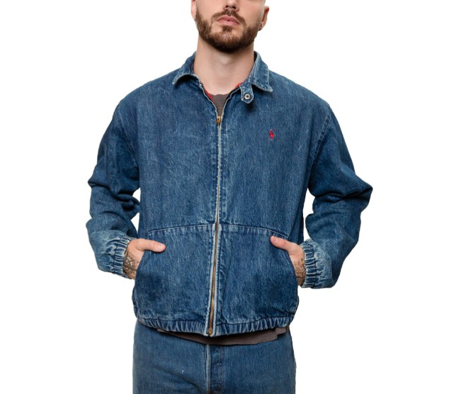
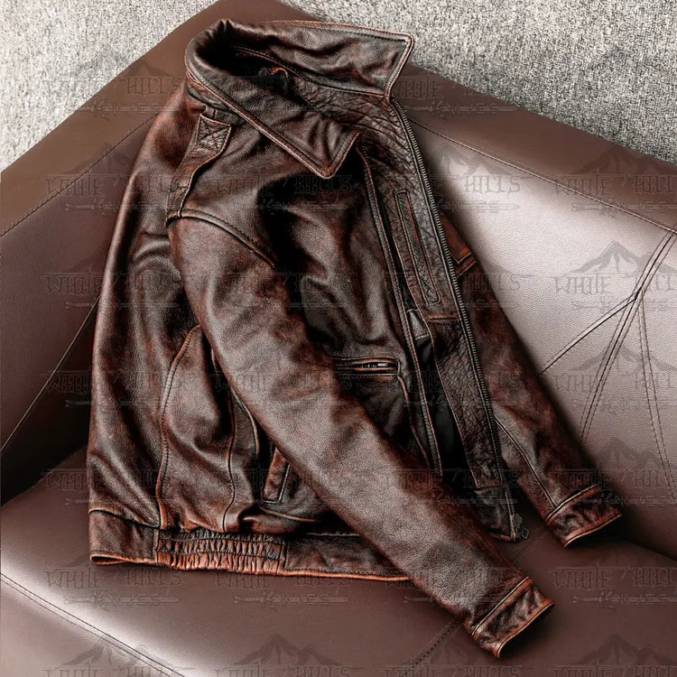

Chaqueta North Face Hombre
Las chaquetas North Face son el epítome de la funcionalidad y el estilo. Cada chaqueta
North Face está diseñada con un enfoque en la calidad, la comodidad y la durabilidad.
Las chaquetas North Face vienen en una variedad de estilos, desde chaquetas ligeras hasta
parkas aisladas y chaquetas de plumón.Una característica destacada de las chaquetas North
Face es su construcción de alta calidad. Cada chaqueta North Face está hecha con materiales
de primera calidad, lo que garantiza un ajuste cómodo y una larga durabilidad.Además,
las chaquetas North Face ofrecen una excelente protección contra los elementos. Con
tecnologías como FUTURELIGHT y DryVent, estas chaquetas proporcionan una impermeabilización
y transpirabilidad excepcionales, lo que las hace perfectas para cualquier actividad al aire
libre.

Chaqueta Off White Hombre
Las chaquetas Off-White son un ícono de la moda urbana y el estilo contemporáneo. Cada chaqueta Off-White está diseñada
con un enfoque en la calidad, la comodidad y la durabilidad12. Las chaquetas Off-White vienen en una variedad de estilos,
desde chaquetas bomber con abundantes cremalleras hasta chaquetas vaqueras con detalles de costuras en contraste. Una
característica destacada de las chaquetas Off-White es su construcción de alta calidad. Cada chaqueta Off-White está
hecha con materiales de primera calidad, lo que garantiza un ajuste cómodo y una larga durabilidad.
Además, las chaquetas Off-White ofrecen un estilo inconfundible. Con aplicaciones de marca en las chaquetas
varsity y las inconfundibles rayas Diag en los estilos bomber, estas chaquetas son un testimonio de la visión de
Virgil Abloh.Así que, si estás buscando una chaqueta que sea versátil, duradera y siempre a la
moda, no busques más allá de las chaquetas Off-White. Ya sea que estés yendo a un evento de moda,
a una cena informal o simplemente buscando la chaqueta perfecta para tu atuendo urbano, una chaqueta
Off-White es la elección perfecta para ti. ¡Hazte con tu chaqueta Off-White hoy mismo

Chaqueta Polo Vintage
La chaqueta vintage Polo Ralph Lauren Denim Jacket, tamaño grande, fabricada en Estados Unidos, es una pieza de moda
clásica y atemporal que encapsula el estilo icónico de la marca Polo Ralph Lauren. Confeccionada con denim de alta
calidad, esta chaqueta ofrece durabilidad y estilo sin esfuerzo.
El diseño presenta detalles característicos de la marca, como el emblemático logo de Polo Ralph Lauren y acabados de
calidad artesanal. El tamaño grande asegura un ajuste cómodo y versátil para una amplia variedad de estilos y figuras.
Esta chaqueta denim es una opción ideal para aquellos que buscan añadir un toque de estilo vintage y americano a su
guardarropa. Ya sea para un look casual de fin de semana o para complementar un conjunto más sofisticado, la chaqueta
Polo Ralph Lauren Denim Jacket es una elección clásica que nunca pasa de moda.

Chaqueta White Hills de Cuero
La chaqueta White Hills Vintage Genuine Cowhide Leather Jacket Men es una pieza de moda clásica y atemporal que combina
estilo y durabilidad. Fabricada con cuero genuino de alta calidad, esta chaqueta ofrece una apariencia elegante y una
sensación de lujo.
El diseño presenta un estilo vintage con detalles cuidadosamente elaborados, como costuras decorativas y cierres
metálicos, que añaden un toque de autenticidad y estilo retro. La calidad del cuero garantiza una chaqueta resistente y
duradera que mejora con el tiempo, proporcionando un estilo duradero y versátil.
Con su diseño atemporal y su artesanía excepcional, la chaqueta White Hills es una opción ideal para hombres que buscan
una prenda de abrigo que combine estilo clásico con calidad duradera. Ya sea para un look casual o para ocasiones más
formales, esta chaqueta añadirá un toque de sofisticación a cualquier conjunto.